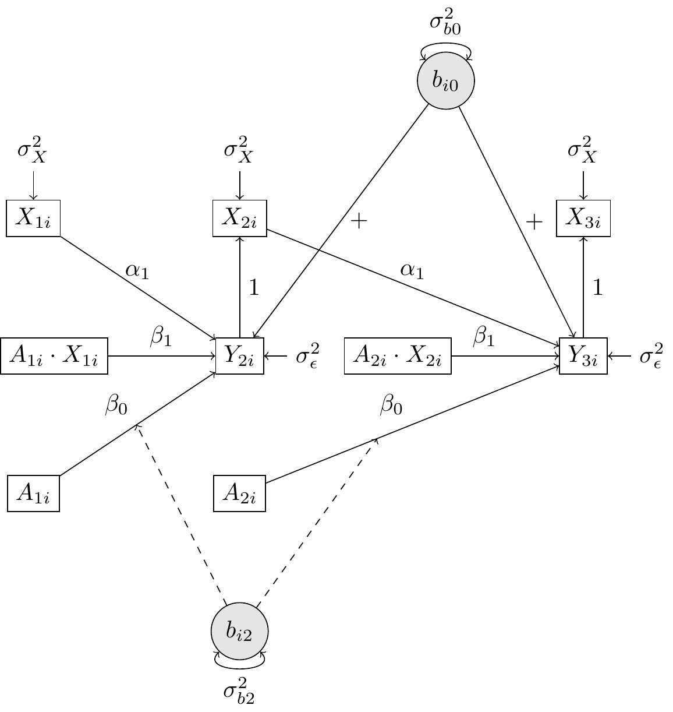
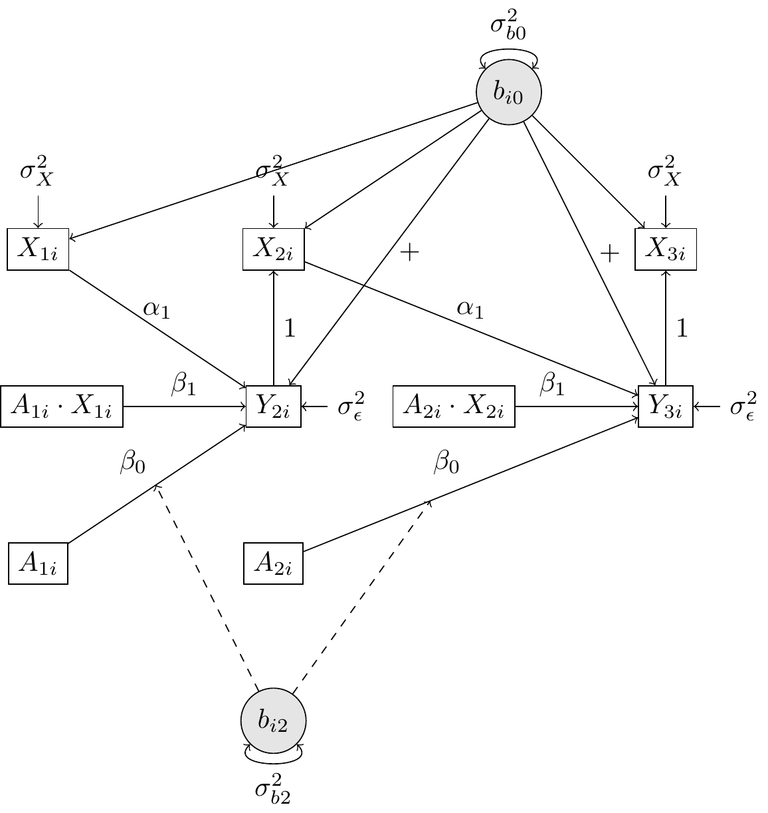
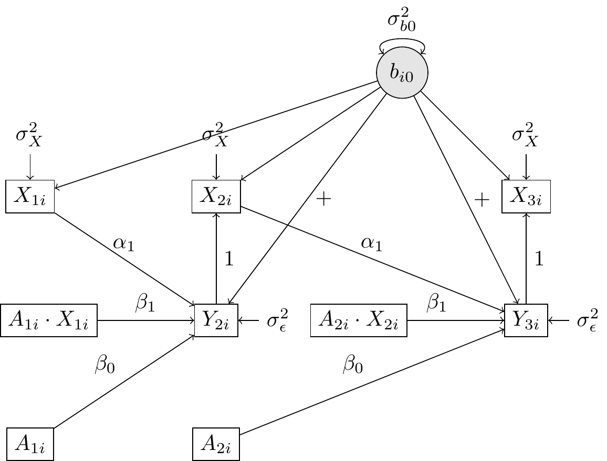
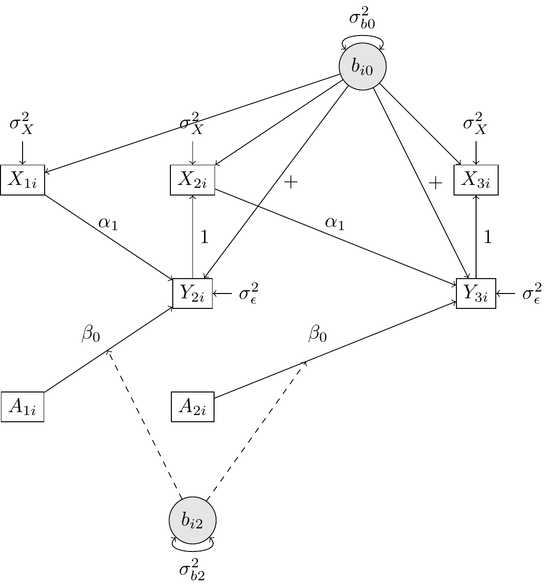
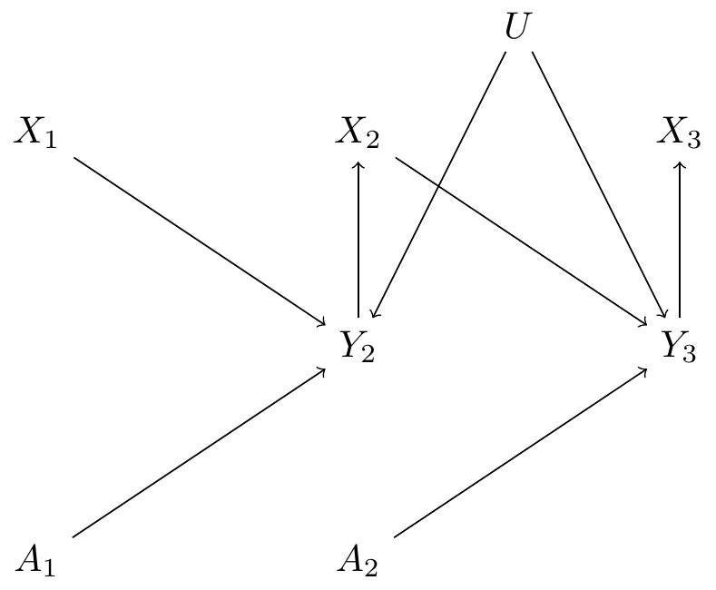
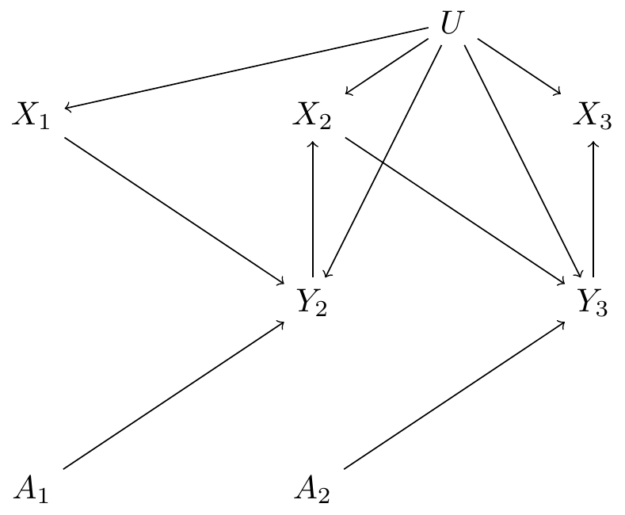

here() starts at C:/Users/Primary/Documents/GitHub/Master-Thesis
── Attaching core tidyverse packages ──────────────────────── tidyverse 2.0.0 ──
✔ dplyr 1.1.4 ✔ readr 2.1.5
✔ forcats 1.0.0 ✔ stringr 1.5.1
✔ ggplot2 3.5.1 ✔ tibble 3.2.1
✔ lubridate 1.9.3 ✔ tidyr 1.3.1
✔ purrr 1.0.2
── Conflicts ────────────────────────────────────────── tidyverse_conflicts() ──
✖ purrr::%@%() masks rlang::%@%()
✖ dplyr::filter() masks stats::filter()
✖ purrr::flatten() masks rlang::flatten()
✖ purrr::flatten_chr() masks rlang::flatten_chr()
✖ purrr::flatten_dbl() masks rlang::flatten_dbl()
✖ purrr::flatten_int() masks rlang::flatten_int()
✖ purrr::flatten_lgl() masks rlang::flatten_lgl()
✖ purrr::flatten_raw() masks rlang::flatten_raw()
✖ dplyr::group_rows() masks kableExtra::group_rows()
✖ purrr::invoke() masks rlang::invoke()
✖ dplyr::lag() masks stats::lag()
✖ purrr::splice() masks rlang::splice()
ℹ Use the conflicted package (<http://conflicted.r-lib.org/>) to force all conflicts to become errors
Loading required package: Matrix
Attaching package: 'Matrix'
The following objects are masked from 'package:tidyr':
expand, pack, unpack
Attaching package: 'ggdag'
The following object is masked from 'package:stats':
filter
Linking to ImageMagick 6.9.12.98
Enabled features: cairo, freetype, fftw, ghostscript, heic, lcms, pango, raw, rsvg, webp
Disabled features: fontconfig, x11
Using poppler version 23.08.0
Introduction
Across a wide range of disciplines, researchers analyze clustered longitudinal, observational data to investigate prospective causal relationships between variables. When analyzing such data, the psychological sciences most commonly resort to the multilevel linear model [MLM, @mcneish2017], which—in the context of longitudinal data analysis—separates observed variance into stable between-person differences and within-person fluctuations [@hamaker2020]. Conversely, other fields, such as biostatistics and econometrics often favour generalized estimating equations (GEE) for the analysis of longitudinal data [@mcneish2017]. Despite some cross-disciplinary efforts to compare these methods [@muth2016; @mcneish2017; @yan2013], their scarcity may leave researchers with limited guidance in choosing the most suitable approach for their application.
A recent study by @qian2020 highlighted an issue present in both methods—except for GEE with working independence—where controlling for time-varying endogenous covariates may lead to biased causal estimates. A time-varying covariate is endogenous if it is directly or indirectly influenced by prior treatment or outcome, meaning its value may be determined by earlier stages of the process [@qian2020]. As a result of including these covariates in these models, ordinary interpretations of the coefficients are no longer valid [@qian2020, p. 3]. According to @diggle2002, this issue not only pertains GEE and MLM, but all longitudinal data analysis methods.
However, due to a divide between the disciplines that employ these methods, such critiques of the MLM appear to have largely failed to reach the applied researcher in psychology. One specific reason might be that the technical jargon in other disciplines makes it difficult for researchers to recognize when and how these issues emerge. Therefore, this report aims to understand and explain the issue of including endogenous covariates in analyses involving GEE and MLM in a psychological context. To achieve this aim, the current investigation employs (a) graphical tools such as the directed acyclic graph (DAG) and path diagram to assess potentially relevant assumptions, as well as (b) data simulations with additional scenarios to pinpoint the issue. Accordingly, the following research question will be addressed: When does the inclusion of endogenous variables in multilevel linear models result in biased estimates of the treatment effect?
Methods
To obtain a better understanding of the issue exposed by @qian2020, two methods were employed. First, graphical methods were used provide insight into the presence and extent of bias with potential violation of assumptions: (a) path diagrams were used to evaluate the conditional independence assumption and (b) directed acyclic graphs (DAGs) were used to evaluate the backdoor criterion [@pearl1988; @pearl2009]. Second, a simulation study was performed to reproduce the results for the generative models (GMs) from @qian2020 and to further isolate the issue using additional GMs. In this simulation, bias in the treatment effect (RQ 1) was assessed with analytical multilevel models. The discrepancy between conditional and marginal interpretations of the treatment effect (RQ 2) was assessed with GEE with working independence.
Data Generation
In the simulation @qian2020 considered three generative models (GMs), all of which have an endogenous time-varying covariate. In GM1, the endogenous covariate \(X_{it}\) equals the previous outcome \(Y_{it}\) plus some random noise, so the conditional independence assumption is valid. In GM3, the endogenous covariate depends directly on \(b_{i0}\), violating the assumption. To isolate the issue in GM3, we consider two variations on this model: GM3A, where the random slope \(b_{i2}\) for the treatment \(A_{it}\) is removed; GM3B, where the interaction term \(\beta_1 A_{it} X_{it}\) is removed. Note that the conditional independence assumption is violated in either of these variations. The details of the generative models are described below. We follow the notation of @qian2020 to allow for direct comparison, but rewrite the equations into within- and between-person models [see @raudenbush2002].
Generative Model 1
In GM1, we considered a simple case with only a random intercept and a random slope for \(X_{it}\). The outcome is generated according to the following repeated-observations or within-person model (level 1):
The random effects \(b_{i0} \sim \mathcal{N}(0, \sigma_{b0}^2)\) and \(b_{i2} \sim \mathcal{N}(0, \sigma_{b2}^2)\) are independent of each other. The covariate is generated as \(X_{i1} \sim \mathcal{N}(0, 1)\), and for \(t \geq 2\),
\[
X_{it} = Y_{it} + \mathcal{N}(0, 1).
\]
The randomization probability \(p_t = P(A_{it} = 1 \mid H_{it})\) is constant at \(1/2\). Thus, \(A_{it} \sim \text{Bernoulli}(0.5)\) for \(i = 1, \ldots, N\) and \(t = 1, \ldots, T\). The exogenous noise is \(\epsilon_{it+1} \sim \mathcal{N}(0, \sigma_\epsilon^2)\).
Figure 1 (a) shows the path diagram for the first couple observations of GM1.
Generative Model 3
GM3 is the same as GM1, except that the covariate \(X_{it}\) depends directly on \(b_{i0}\):
\[
X_{i1} \sim \mathcal{N}(b_{i0}, 1), \quad X_{it} = Y_{it} + \mathcal{N}(b_{i0}, 1) \text{ for } t \geq 2.
\]
Figure 1 (b) shows the path diagram for the first couple observations of GM3.
Generative Model 3A
GM3A is the same as GM3, except that the random slope \(b_{i2}\) for the treatment \(A_{it}\) is removed (see Figure 1 (c)). The single equation model then becomes:
GM3B is the same as GM3, except that the interaction term \(\beta_1 A_{it} X_{it}\) is removed (see Figure 1 (d)). The single equation model then becomes:
where \(H_{it-1}\) refers to the history of the set of covariates, which in this case are all observations of covariate \(X_{it}\) prior to the current timepoint \(t\). This allows \(X_{it}\) to be endogenous, but the endogenous covariate \(X_{it}\) can only depend on the random effects through variables observed prior to \(X_{it}\). If the only endogenous covariates are functions of prior treatments and prior outcomes, then the assumption automatically holds.
To make the application of the assumption more insightful, we accompany the equations of the GMs with path diagrams of the first three observations \(t\) for each generative model (see Figure 1). The path diagrams of the three data generating models shows the discrepancies between the different generative models—especially concerning the interaction effects—more clearly than DAGS.
When inspecting Figure 1 (a), we may notice that \(X_{it}\) becomes independent of the random effects after conditioning on \(Y_{it}\). On the other hand, we can see that this assumption is violated only in GM3/3A/3B, as \(X_{it}\) depends directly on \(b_{i0}\) and can thus not be made independent of the random effects by conditioning on prior variables such as \(Y_{it}\) (see Figure 1 (b), Figure 1 (c) and Figure 1 (d)). Thus, all things considered, we would expect biased estimates of the treatment effect for GM3/3A/3B but not for GM1.

(a) GM1

(b) GM3

(c) GM3A

(d) GM3B
Note. Random effects are represented by grey circles, observed variables by squares and relationships across variables by arrows, where dashed lines are reserved for random slopes.
According to the backdoor criterion [@pearl1988; @pearl2009], a requirement for causal identification, causal effects can be identified by blocking non-causal paths through conditioning on intermediate variables (e.g., controlling or matching). If any non-causal paths cannot be blocked due to omitted variables or measurement error, treatment and outcome remain linked via backdoor paths, leading to biased estimates of the treatment effect [@Kim2021a].
DAGs are a useful tool for representing causal relationships between variables and to evaluate the assumptions needed for causal identification [see @elwert2014 for a psychological example]. We formulated the DAGs for the first three observations of each generative model, where the random disturbance \(b_{0i}\) was represented by the node U [e.g., @Kim2021a, see @fig-DAGs].
When applying Pearl’s backdoor criterion to GM1/3/3A/3B, it may be observed that there exists no backdoor path in the treatment effect \(A_{it} \to Y_{it+1}\), as \(A_{it}\) does not have any parents. While we need not control for covariate \(X_{it}\) to obtain an unbiased total effect, doing so should not introduce bias. All things considered, according to the backdoor criterion, controlling for the covariate \(X_{it}\) should not result in biased estimates of the treatment effect for any of the generative models.

(a) GM 1

(b) GM 3, 3A, 3B
Note. The red arrows show the biased backdoor path(s) in the treatment efffect (before controlling for \(X_{it}\)).
We evaluated the performance of the models across a total of 24 different settings, each replicated 1,000 times, by systematically varying the following factors:`
Generative Models (GM): 1, 3, 3A, 3B
Number of timepoints (T): 10, 30
Sample size (N): 30, 100, 200
All data generation and estimation was performed in R, version 4.4.2 [@rcoreteam2024]. After the generation of data generation for any given setting, several models were fit. To fit the standard MLM, the lmer function from the R-package lme4[@bates2015] was employed with restricted maximum likelihood estimation. For the MLM, the analytical models were equivalent to each of the respective data-generating models. To fit the GEE with the independent working correlation structure, the geeglm function from the R-package geepack[@halekoh2006] was employed with the identity link function. Since the random effects are not explicitly modelled in GEE, the analytical GEE models simply contain only the fixed effects of the generative model at hand.
Results
Table 1 presents the simulation results for each of the generative and analytical models. The estimates for the analytical MLM may be interpreted in terms of bias, where given the value of the treatment effect \(\beta_0 = 1\), absolute bias of .05 would imply \(5\%\) relative bias. Here we find the greatest absolute bias of \(.02-.06\) for GM3, \(\leq .015\) for GM1/2, \(\leq .010\) for GM3B and , \(\leq .005\) for GM3A. While the bias found for the original GMs 1, 2 and 3 was slightly larger here compared to @qian2020, the overall pattern remained the same. To conclude, once we remove either the dependency of the random intercept with the covariate (GM1), the random slope \(b_{i2}\) (GM3A) or the interaction \(\beta_1\) (GM3B) from GM3, the bias dissapears or becomes very small. The bias in GM3 decreases as the number of timepoints \(T\) increases from 10 to 30. Note that the MLM model fitting success rates are particularly poor for GM2, where in the worst case, only 87 of the 1000 models were fitted.
For the GEE with independence, the values refer to the difference between the estimated marginal effect—which should be unbiased under endogenous covariates [see @pepe1994]—and the specified conditional effect. Here we find that there is a enormous difference between these effects for GM2, which increases along with an increase in \(T\) and \(N\), up to a difference of more than \(6,000\). This is followed by a difference of around \(.07-.09\) for GM1, \(.02-.04\) for GM3, \(\leq .015\) for GM3B and close to zero (\(\leq .005\)) for GM3A. The GEE models fitted succesfully for all settings.
Table 1: Simulation results for Generative Models 1, 2, 3, 3A and 3B over 1000 replications
MLM
GEE-IND
GM
T
N
Bias
SD
SR
Difference
SD
SR
1
10
30
0.000
0.238
0.998
0.071
0.296
1
100
-0.012
0.129
1.000
0.074
0.169
1
200
0.003
0.093
0.999
0.085
0.116
1
30
30
-0.001
0.203
0.998
0.085
0.224
1
100
-0.007
0.107
0.996
0.083
0.123
1
200
0.001
0.079
0.996
0.094
0.088
1
2
10
30
0.011
0.282
0.925
0.306
1.630
1
100
0.005
0.147
0.881
0.565
1.836
1
200
0.008
0.103
0.844
0.935
1.887
1
30
30
0.000
0.220
0.603
182.565
4751.387
1
100
-0.014
0.114
0.247
-356.412
39799.388
1
200
-0.013
0.087
0.087
6319.792
136201.790
1
3
10
30
-0.052
0.245
0.999
0.020
0.249
1
100
-0.064
0.134
1.000
0.024
0.141
1
200
-0.051
0.096
1.000
0.035
0.097
1
30
30
-0.024
0.206
0.997
0.030
0.208
1
100
-0.030
0.108
0.996
0.027
0.112
1
200
-0.023
0.080
0.997
0.037
0.081
1
3A
10
30
0.000
0.126
1.000
-0.004
0.157
1
100
0.004
0.073
1.000
0.001
0.090
1
200
0.002
0.048
1.000
-0.001
0.062
1
30
30
-0.001
0.071
1.000
-0.003
0.090
1
100
0.000
0.040
1.000
-0.001
0.051
1
200
0.000
0.028
1.000
0.000
0.036
1
3B
10
30
0.001
0.217
0.999
-0.013
0.241
1
100
-0.008
0.121
1.000
-0.008
0.138
1
200
0.005
0.087
1.000
0.003
0.097
1
30
30
0.000
0.193
1.000
-0.004
0.200
1
100
-0.008
0.103
0.997
-0.007
0.108
1
200
0.001
0.075
0.999
0.001
0.080
1
Note. SR: model fitting success rate. Bias: \(\hat{\beta}_{0,MLM} - \beta_{0,MLM}\). Difference: \(\hat{\beta}_{0,GEE} - \beta_{0,MLM}\). SD: standard deviation of estimates across replications.
Discussion
This report employed both graphical methods and data simulations to understand and explain the issue of endogenous covariates. Now we first discuss the expected results based on the backdoor criterion [@pearl1988, @pearl2009] and the conditional independence assumption [@qian2020], whereafter we discuss the findings relating to the two research questions.
Using the conditional independence assumption of @qian2020, we would expect, based on the path diagrams, that the treatment effect would be biased for GM3, 3A and 3B. On the other hand, the backdoor criterion suggested the absence of bias for all generative models. While @qian2020 show that GM3 is the only model with bias in the treatment effect, the backdoor criterion failed to identify this bias, as there is no backdoor path in the treatment effect. This may be explained by the fact that the classic DAG does not impose restrictions based on (a) the random slopes and (b) interaction effects.
The first research question—pertaining to the extent of treatment effect bias in MLM estimates of generative model that were nested in GM3—was investigated using the analytical multilevel model. First, we reproduced the findings by @qian2020 who found consistent estimators for GM1 and GM2 and inconsistent ones for GM3. Using additional generative models, we found that bias became indiscernable when removing from GM3 either the dependency between the random intercept and covariate (GM1), the random slope for treatment (GM3A) or the interaction effect (GM3B). This finding is in sharp contrast to the suggestion of the conditional independence assumption that the treatment effect would be biased for GM3, 3A and 3B.
The second research question—related to the discrepancy between marginal and conditional interpretations of the treatment effect—was assessed with analytical GEE with working independence. Here we found extreme differences between the estimated marginal and specified conditional effect for GM2, suggesting that the marginal interpretation breaks down the most for this generative model1. Hence, for this GM, a false interpretation of the MLM parameters as marginal, would potentially have great inferential consequences. For GM1 and GM3, there smaller but still noticeable differences between the marginal and conditional effect. This suggests that the marginal interpretation of the treatment effect may be recovered for GM3, 3A and 3B, but not for GM2. Especially for GM3A, this difference was practically indescernable, suggesting that the marginal interpretation of the treatment effect may be recovered. Conversely, @qian2020 notes that if the random effect in the model does not interact with the treatment variable, the interaction recovers its marginal interpretation but the treatment effect does not (p. 382). This difference in conclusions may be explained through the difference in approach: while @qian2020 provides an analytical answer, the current study provides approximations through simulations.
For the GM2 setting of @qian2020, we found several issues, which were most pronounced for \(T = 30\). First, we noticed extreme model fitting issues for the MLM, due to, among other things, a lack of convergence and singularity. It should be noted that unlike the script used here, @qian2020 deals only with errors of the lmer() function, but not with warnings (e.g., pertaining to non-convergence) in their script. This discrepancy may explain the slightly different estimates of MLM bias for GM2. Second, we found extremely large GEE estimates of the treatment effect. This may be explained by the fact that the values of the covariate and outcome were also extremely great, often exceeding a million. All things considered, this suggests that GM2 may be a poorly specified model.
The current research report leaves several avenues unexplored. First, it is unclear whether the simulation findings pertaining the generative models in @qian2020 and here generalize to other generative models. For instance, we found here that removal of a random slope or interaction from GM3 got rid of most if not all of the treatment effect bias. Thus, it is important to establish how this generalizes, so that practical recommendations can be formulated. This is particularly important, since while violations of model assumptions are never desired, the robustness against and the practical implications of a violation is what matters. Second, it is unclear how exactly the divide between the literatures pertaining to the focus of the MLM on different centering methods and within- and between-person interpretations and the focus of the GEE on marginal and conditional interpretations may be bridged. Consequently, future research could assess the implications of centering methods in MLMs on the extent to which the marginal interpretation of MLM breaks down. Third, we found that the classical DAG may not be sufficient to identify bias in the treatment effect for GM3, especially due to its lack of specification of interaction effects. Concerns regarding the use of Pearl’s backdoor criterion in situations with interaction effects have been voiced by several people (see @weinberg2007; @attia2022). Future research could explore to what extent proposed extensions of the DAG may be useful in identifying bias in the treatment effect for GM3. Finally, it may be interesting to investigate the implications of endogenous covariates in MLMs for other types of longitudinal data analysis methods, such as dynamic structural equation modelling (DSEM; a widely used framework in the social sciences based on MLM).
Third, since the issue extends to all longitudinal data analysis methods according to @diggle2002, in future research it may be interesting to investigate the implications of endogenous covariates in MLMs for other types of longitudinal data analysis methods, such as dynamic structural equation modelling (DSEM; a widely used framework in the social sciences based on MLM).
References
Footnotes
Note, however, that this generative model may not be plausible given the extreme spread across the covariate and treatment variables.↩︎